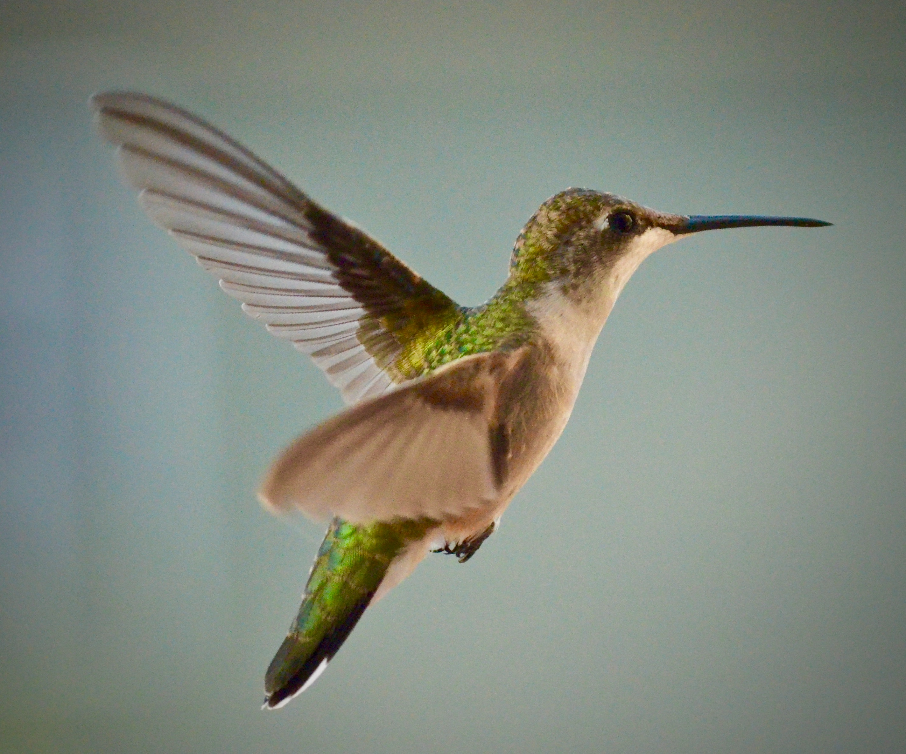

HUMMING
A hum is a sound made by producing a wordless tone with the mouth closed, forcing the sound to emerge
from the nose. To hum is to produce such a sound, often with a melody. It is also associated with
thoughtful absorption, 'hmm'.
A hum has a particular timbre (or sound quality), usually a monotone or with slightly varying tones.
There are other similar sounds not produced by human singing that are also called hums, as the sound
produced by machinery in operation, such as a microwave, or by an insect in flight. The hummingbird was
named for the sound that bird makes in flight which sounds like a hum.